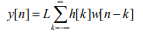
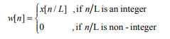

Interpolation
In the mathematical field of numerical analysis, interpolation is a type of estimation, a method of constructing (finding) new data points based on the range of a discrete set of known data points.
In engineering and science, one often has a number of data points, obtained by sampling or experimentation, which represent the values of a function for a limited number of values of the independent variable. It is often required to interpolate; that is, estimate the value of that function for an intermediate value of the independent variable.A closely related problem is the approximation of a complicated function by a simple function. Suppose the formula for some given function is known, but too complicated to evaluate efficiently. A few data points from the original function can be interpolated to produce a simpler function which is still fairly close to the original. The resulting gain in simplicity may outweigh the loss from interpolation error and give better performance in calculation process.
Interpolation is the exact opposite of decimation. It is an information preserving operation, in that all samples of x[n] are present in the expanded signal y[n]. The mathematical definition of L-fold interpolation is defined by Equation given below andthe block diagram notation is depicted in Figure . Interpolation works by inserting (L–1) zero-valued samples for each input sample. The sampling rate therefore increases from Fs to LFs. With reference to Figure , the expansionprocess is followed by a unique digital low-pass filter called an anti-imaging filter. Although the expansion process does not cause aliasing in the interpolated signal, it does however yield undesirable replicas in the signal’s frequencyspectrum. We shall see how this special filter is necessary to remove these replicas from the frequency
The formula for the interpolation is given by
where

Now let us see discrete time signals of interpolation and decimation.
a shows the interpolation of decimated signal b, like this we will sample average signals in between zeroes for interpolating the signal after upsample and c is the block diagram of interpolation which consists of upsample with interpolating filter.